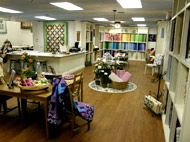
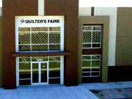
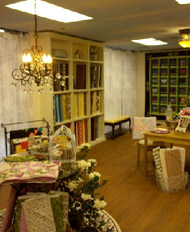

Address
34500 Gateway Drive #110Palm Desert, California 92211
Telephone
(760) 328-8737Hours
Mon to Sat: 9am to 4pm Sunday: Closed
Website
www.quiltersfaire.com


The Quilter's Faire
The Quilter's Faire is located in Southern California, just outside Palm Springs. Even with our warm weather all year we still love to quilt and sew. Geared to learning and creating, we are always attending workshops, classes and seminars so we can bring you the latest tips, techniques and ideas to our store and classes.
Our inventory is continually changing. We are always scouring the market to bring unique patterns, latest fabrics, new and improved notions and lots of ideas to the store to keep you as excited about fabric, quilting and sewing as we are.
If you are in the Palm Springs area, stop by and see us. You might just find that new fabric or pattern you've been searching for. We look forward to seeing you!
Map & Directions
View Larger Map
- Home
- Prize Winners
- Webmaster
- © Southern California Quilters Run 2016-17